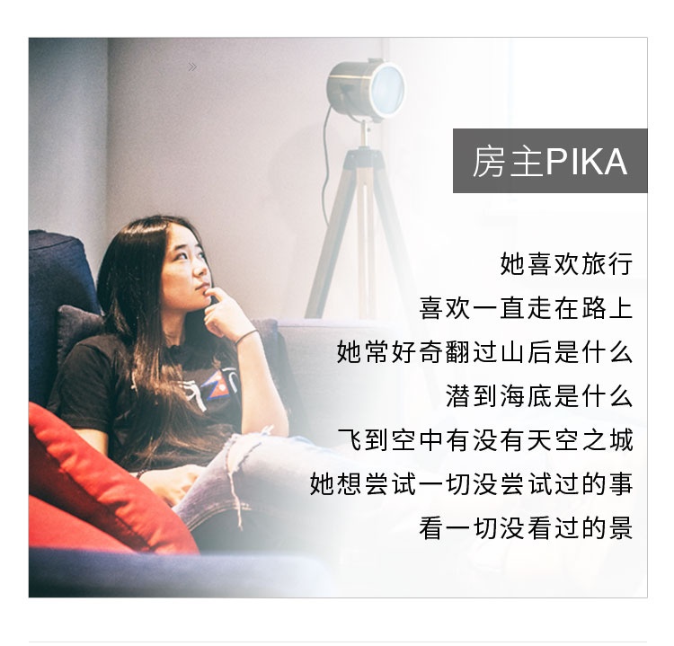
房主PIKA
他喜欢旅行
喜欢一直走在路上
她常好奇翻过山后是什么
潜到海底是什么
飞到空中有没有天空之城
她想尝试一切没尝试过的事
看一切没看过的景
-
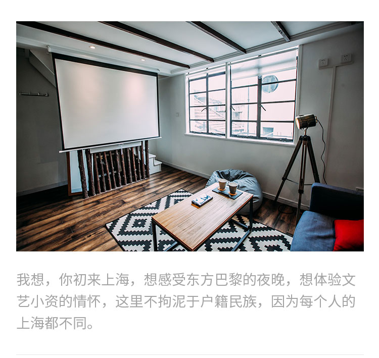
我想，你初来上海
想感受东方巴黎夜晚，想体验文艺小资情怀
这里不拘泥于户籍民族
因为每个人的上海都不全相同 -
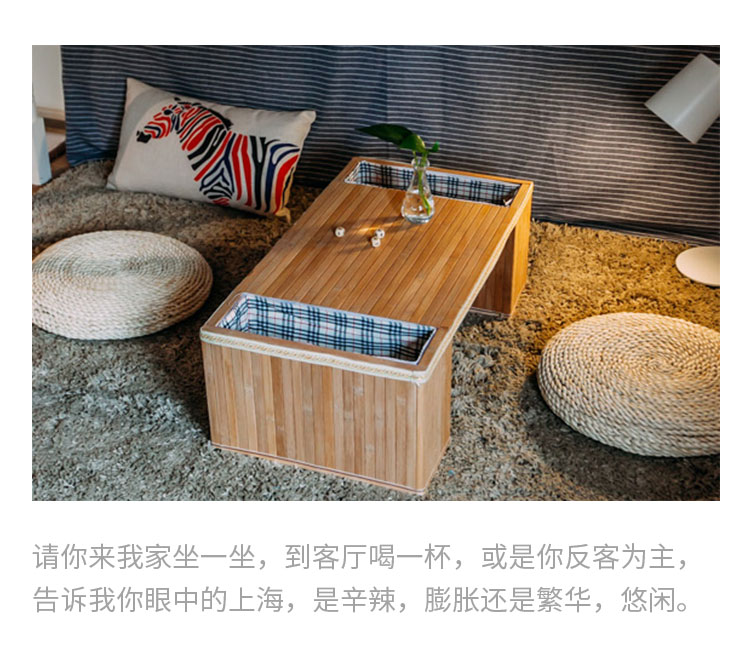
请你来我家坐一坐，到客厅喝一杯。让你反客为主一次 告诉我你眼里的上海是什么样的，是辛辣、膨胀还是繁华、悠闲。
-
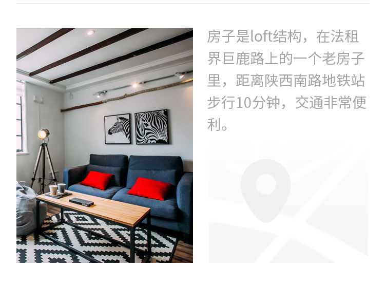
房子是loft结构，在法租界巨鹿路上的一个老房子里，距离陕西南路地铁站步行10分钟，非常便利。

-
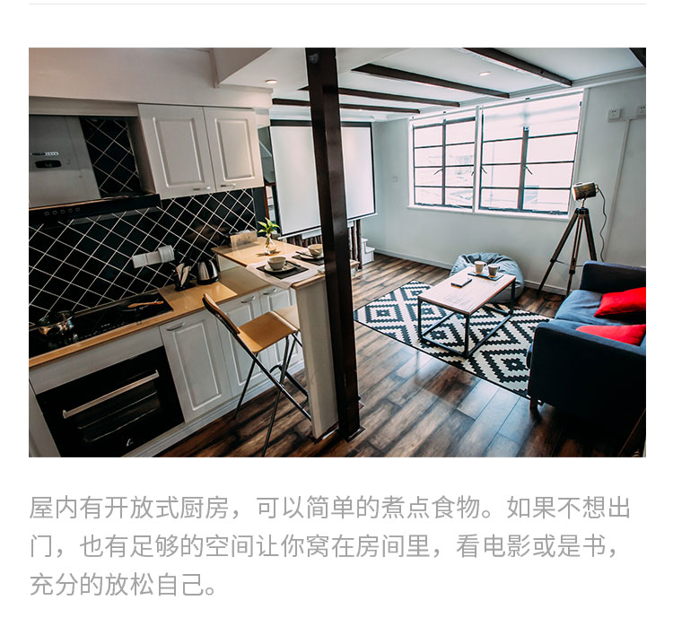
房屋有开放式厨房，可以简单的煮点儿填饱肚子的食物如果不想出门，有足够的空间让你窝在房间里，看看电影，看看书，充分的放松自己。
-
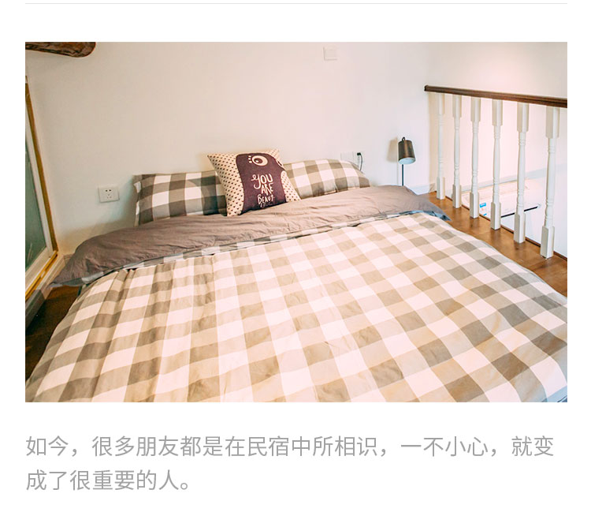
如今，很多朋友都是在客栈中所相识，一不小心，就变成了很重要的人。
-
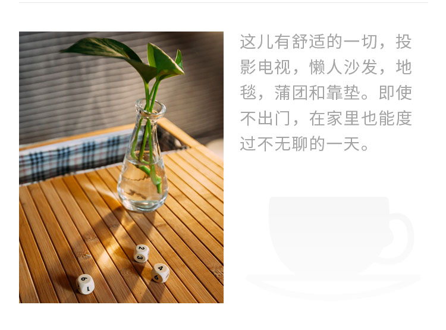
这儿有舒适的一切——投影电视、懒人沙发、地毯、蒲团、靠垫。即使不出门，在家里也能度过不无聊的一天。

-
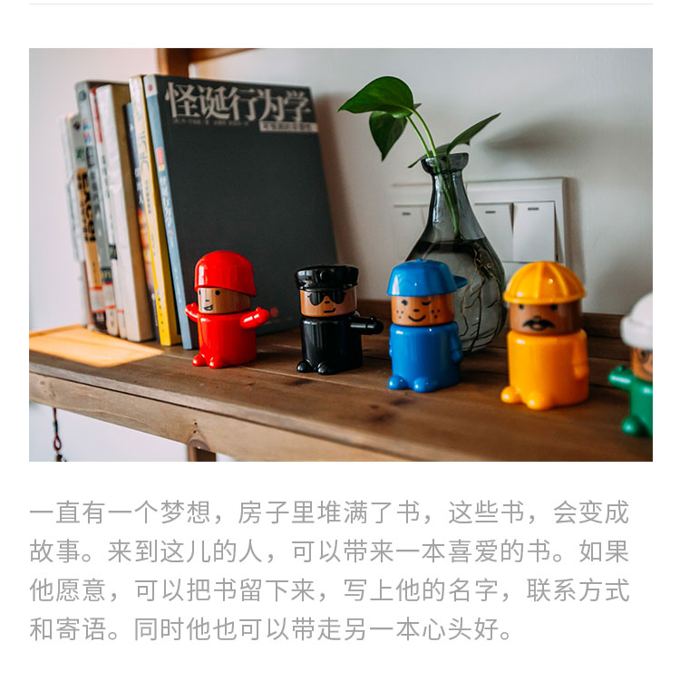
一直有一个想法，在房子里放很多书，这些书，在房间里会变成一种故事。例如，来到这儿的人，可以带一本书，如果他愿意，可以把书留下来，写上他的名字，联系方式和寄语，也可以带走另一本喜欢的书。
-
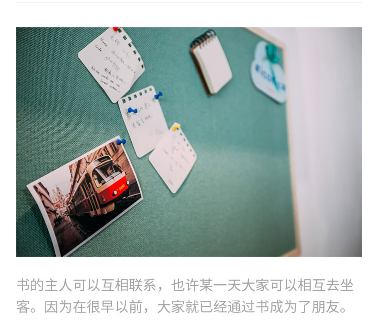
书的主人可以互相联系，也许某一天大家就都可以相互去坐客了。因为在很早以前，大家就已经通过书成为了朋友。
-
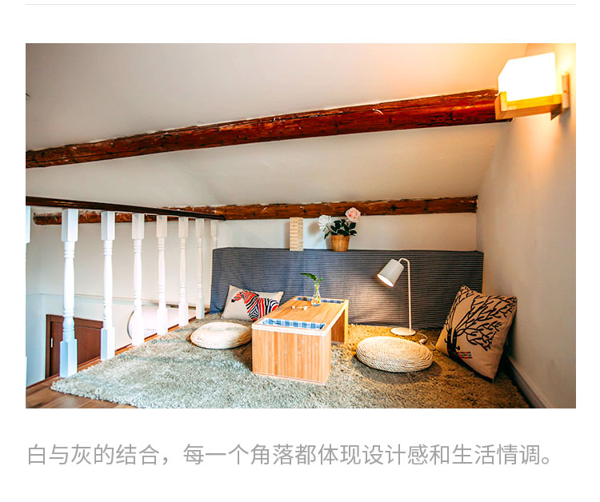
白与灰的结合，每一个角落都体现设计感和生活情调。
-
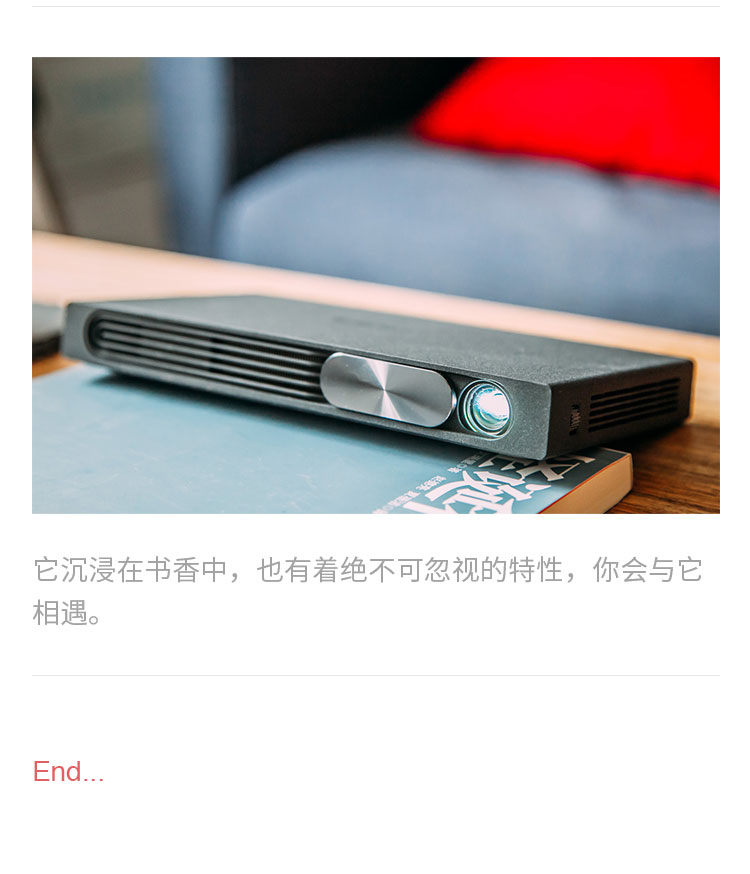
它沉浸在书香中，也有着绝不可忽视的特性，你会期待与它相遇。
- End